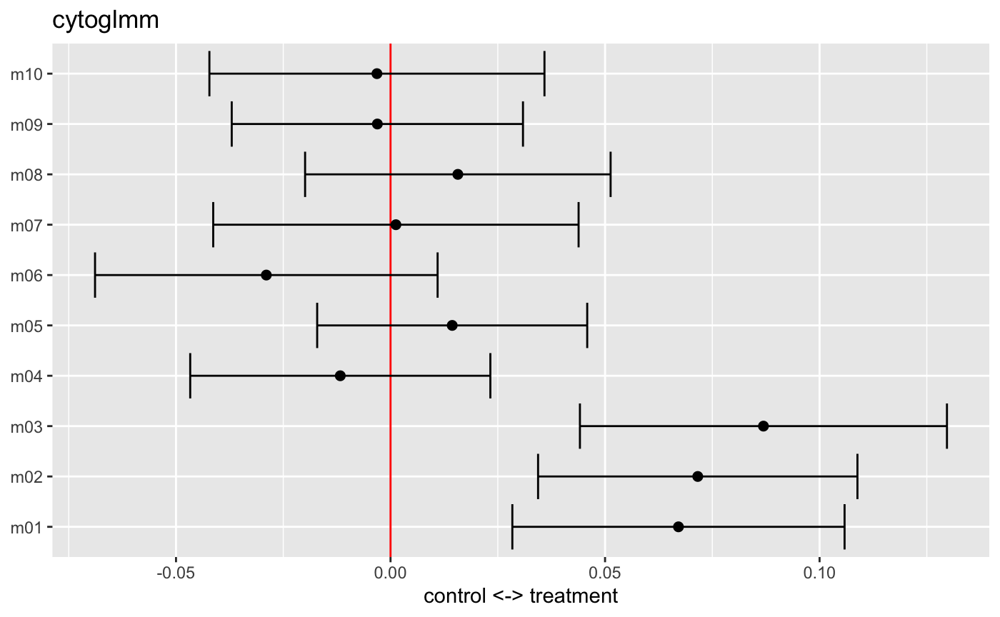
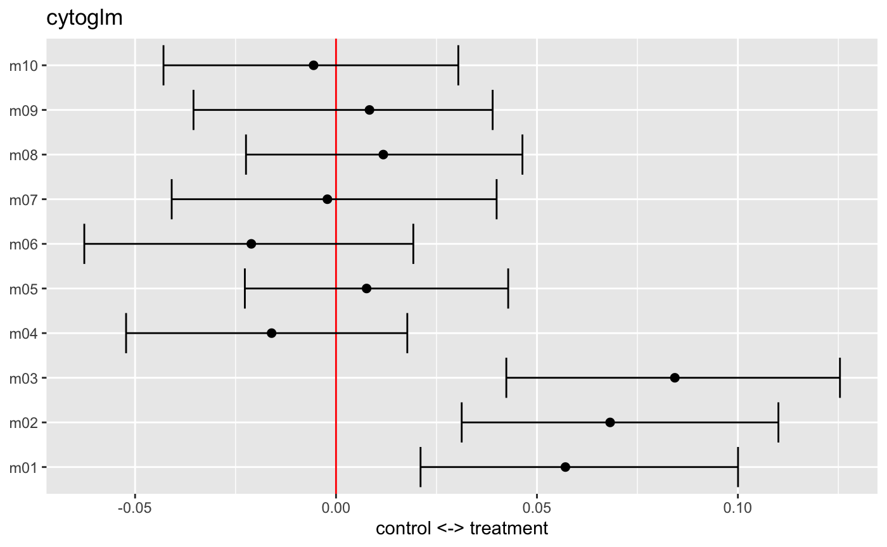

vignettes/CytoGLMM.Rmd
CytoGLMM.RmdFlow and mass cytometry are important modern immunology tools for measuring expression levels of multiple proteins on single cells. The goal is to better understand the mechanisms of responses on a single cell basis by studying differential expression of proteins. Most current data analysis tools compare expressions across many computationally discovered cell types. Our goal is to focus on just one cell type. Differential analysis of marker expressions can be difficult due to marker correlations and inter-subject heterogeneity, particularly for studies of human immunology. We address these challenges with two multiple regression strategies: A generalized linear mixed model (GLMM) and a bootstrapped generalized linear model (GLM). Here, we illustrate the CytoGLMM R package and workflow for simulated mass cytometry data.
Generate data from a Poisson GLM with random effects.
library("CytoGLMM") library("magrittr") set.seed(23) df = generate_data() df
## # A tibble: 16,000 x 12
## donor condition m01 m02 m03 m04 m05 m06 m07 m08 m09 m10
## <int> <fct> <int> <int> <int> <int> <int> <int> <int> <int> <int> <int>
## 1 1 treatment 2 127 116 17 17 17 56 60 7 78
## 2 1 treatment 0 96 54 29 169 32 39 11 19 55
## 3 1 treatment 1 14 52 182 26 12 7 6 37 274
## 4 1 treatment 6 20 34 21 42 3 30 19 7 68
## 5 1 treatment 18 30 15 139 22 4 10 5 32 19
## 6 1 treatment 1 17 38 151 14 5 26 29 26 83
## 7 1 treatment 24 178 10 8 498 21 26 33 8 26
## 8 1 treatment 1 83 16 59 85 2 11 28 11 28
## 9 1 treatment 2 24 48 13 27 17 51 194 28 225
## 10 1 treatment 2 39 13 4 36 28 39 104 1 60
## # … with 15,990 more rowsExtract the marker names from the data frame.
protein_names = names(df)[3:12]
Apply a data transformation.
Fit model. It is normal to receive a warning about the covariance matrix estimate. This warning can be ignored.
glmm_fit = CytoGLMM::cytoglmm(df, protein_names = protein_names, condition = "condition", group = "donor", num_cores = 1) glmm_fit
## number of cells per group and condition:
## control treatment
## 1 1000 1000
## 2 1000 1000
## 3 1000 1000
## 4 1000 1000
## 5 1000 1000
## 6 1000 1000
## 7 1000 1000
## 8 1000 1000
##
## proteins included in the analysis:
## m01 m02 m03 m04 m05 m06 m07 m08 m09 m10
##
## condition compared: condition
## grouping variable: donorPlot results.
plot(glmm_fit)

Summarize results.
summary(glmm_fit)
## # A tibble: 10 x 3
## protein_name pvalues_unadj pvalues_adj
## <chr> <dbl> <dbl>
## 1 m03 0.0000682 0.000682
## 2 m02 0.000163 0.000813
## 3 m01 0.000681 0.00227
## 4 m06 0.155 0.388
## 5 m05 0.371 0.646
## 6 m08 0.388 0.646
## 7 m04 0.512 0.731
## 8 m09 0.859 0.954
## 9 m10 0.874 0.954
## 10 m07 0.954 0.954Extract only proteins below an FDR of 0.05 from the \(p\)-value table.
## # A tibble: 3 x 3
## protein_name pvalues_unadj pvalues_adj
## <chr> <dbl> <dbl>
## 1 m03 0.0000682 0.000682
## 2 m02 0.000163 0.000813
## 3 m01 0.000681 0.00227Fit model.
glm_fit = CytoGLMM::cytoglm(df, protein_names = protein_names, condition = "condition", group = "donor", num_cores = 1, num_boot = 1000) glm_fit
##
## #######################
## ## paired analysis ####
## #######################
##
## number of bootstrap samples: 1000
##
## number of cells per group and condition:
## control treatment
## 1 1000 1000
## 2 1000 1000
## 3 1000 1000
## 4 1000 1000
## 5 1000 1000
## 6 1000 1000
## 7 1000 1000
## 8 1000 1000
##
## proteins included in the analysis:
## m01 m02 m03 m04 m05 m06 m07 m08 m09 m10
##
## condition compared: condition
## grouping variable: donorPlot results.
plot(glm_fit)

Summarize results.
summary(glm_fit)
## # A tibble: 10 x 3
## protein_name pvalues_unadj pvalues_adj
## <chr> <dbl> <dbl>
## 1 m03 0.002 0.02
## 2 m02 0.006 0.03
## 3 m01 0.022 0.0733
## 4 m06 0.394 0.885
## 5 m04 0.466 0.885
## 6 m08 0.544 0.885
## 7 m09 0.644 0.885
## 8 m05 0.708 0.885
## 9 m10 0.852 0.932
## 10 m07 0.932 0.932Extract only proteins below an FDR of 0.05 from the \(p\)-value table.
## # A tibble: 2 x 3
## protein_name pvalues_unadj pvalues_adj
## <chr> <dbl> <dbl>
## 1 m03 0.002 0.02
## 2 m02 0.006 0.03## R version 3.6.2 (2019-12-12)
## Platform: x86_64-apple-darwin15.6.0 (64-bit)
## Running under: macOS 10.16
##
## Matrix products: default
## BLAS: /Library/Frameworks/R.framework/Versions/3.6/Resources/lib/libRblas.0.dylib
## LAPACK: /Library/Frameworks/R.framework/Versions/3.6/Resources/lib/libRlapack.dylib
##
## locale:
## [1] en_US.UTF-8/en_US.UTF-8/en_US.UTF-8/C/en_US.UTF-8/en_US.UTF-8
##
## attached base packages:
## [1] stats graphics grDevices utils datasets methods base
##
## other attached packages:
## [1] magrittr_1.5 CytoGLMM_0.1.0 Rcpp_1.0.4.6 BiocStyle_2.14.4
##
## loaded via a namespace (and not attached):
## [1] nlme_3.1-144 fs_1.4.1 lubridate_1.7.4
## [4] doParallel_1.0.15 RColorBrewer_1.1-2 rprojroot_1.3-2
## [7] tools_3.6.2 backports_1.1.7 utf8_1.1.4
## [10] R6_2.4.1 rpart_4.1-15 colorspace_1.4-1
## [13] nnet_7.3-12 withr_2.2.0 tidyselect_1.1.0
## [16] compiler_3.6.2 cli_2.0.2 factoextra_1.0.6
## [19] logging_0.10-108 sandwich_2.5-1 desc_1.2.0
## [22] labeling_0.3 bookdown_0.17 scales_1.1.1
## [25] hexbin_1.28.1 pkgdown_1.5.1 speedglm_0.3-2
## [28] stringr_1.4.0 digest_0.6.25 minqa_1.2.4
## [31] rmarkdown_2.1 pkgconfig_2.0.3 htmltools_0.4.0
## [34] lme4_1.1-23 rlang_0.4.6 rstudioapi_0.11
## [37] farver_2.0.3 generics_0.0.2 zoo_1.8-7
## [40] BiocParallel_1.20.1 dplyr_1.0.0 ModelMetrics_1.2.2.1
## [43] modeltools_0.2-22 mbest_0.6 Matrix_1.2-18
## [46] fansi_0.4.1 munsell_0.5.0 abind_1.4-5
## [49] lifecycle_0.2.0 stringi_1.4.6 pROC_1.16.1
## [52] yaml_2.2.1 MASS_7.3-51.5 flexmix_2.3-15
## [55] plyr_1.8.6 recipes_0.1.9 grid_3.6.2
## [58] parallel_3.6.2 strucchange_1.5-2 ggrepel_0.8.2
## [61] bigmemory.sri_0.1.3 crayon_1.3.4 lattice_0.20-40
## [64] cowplot_1.0.0 splines_3.6.2 knitr_1.28
## [67] pillar_1.4.4 boot_1.3-24 reshape2_1.4.4
## [70] codetools_0.2-16 stats4_3.6.2 glue_1.4.1
## [73] evaluate_0.14 data.table_1.12.8 BiocManager_1.30.10
## [76] vctrs_0.3.0 nloptr_1.2.2.1 foreach_1.4.8
## [79] gtable_0.3.0 purrr_0.3.4 assertthat_0.2.1
## [82] ggplot2_3.3.2 xfun_0.12 gower_0.2.1
## [85] prodlim_2019.11.13 class_7.3-15 survival_3.1-8
## [88] timeDate_3043.102 tibble_3.0.1 pheatmap_1.0.12
## [91] iterators_1.0.12 memoise_1.1.0 lava_1.6.6
## [94] statmod_1.4.34 bigmemory_4.5.36 ellipsis_0.3.1
## [97] caret_6.0-85 ipred_0.9-9